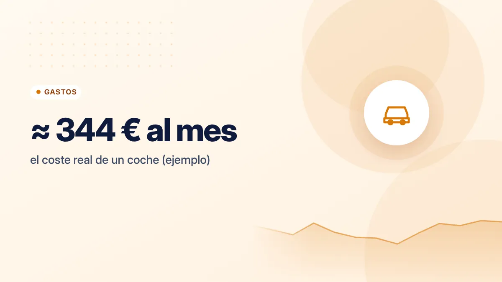
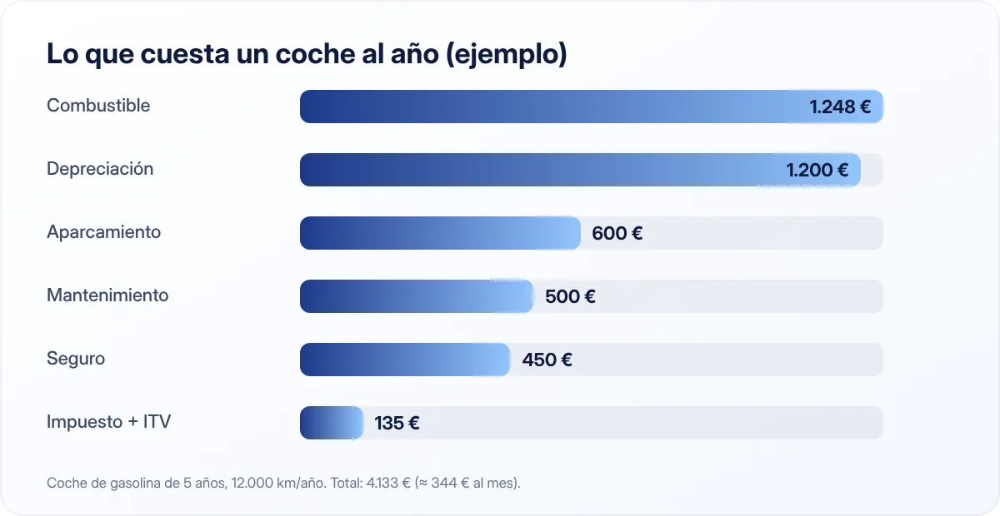

Cuánto cuesta de verdad tener coche y cómo gastar menos en él
La gasolina es solo una parte de lo que cuesta un coche. Cuando sumas todo, muchas personas descubren que es su segundo mayor gasto después de la vivienda.

Puntos clave
- El coste real incluye combustible, seguro, impuestos, mantenimiento, aparcamiento y depreciación.
- Una conducción eficiente y el mantenimiento preventivo reducen el consumo y las averías.
- Antes de cambiar de coche, compara el coste total, no solo la cuota mensual.
Los costes que no ves en el surtidor
Para saber cuánto te cuesta tu coche, suma todo lo que pagas a lo largo de un año:
- Combustible o electricidad.
- Seguro.
- Impuesto de circulación (IVTM), que cobra tu ayuntamiento.
- ITV, según la antigüedad del vehículo.
- Mantenimiento: revisiones, aceite, filtros, neumáticos, frenos.
- Reparaciones imprevistas.
- Aparcamiento: plaza de garaje, zona regulada, parkings.
- Peajes y lavados.
- Financiación: intereses si lo compraste a plazos.
- Depreciación: lo que pierde de valor cada año. No lo pagas en efectivo, pero es dinero que pierdes.
Un ejemplo orientativo

Un coche de gasolina de gama media, con 5 años, que recorre 12.000 km al año:
| Concepto | Coste anual aproximado |
|---|---|
| Combustible (6,5 l/100 km a 1,60 €/l) | 1.248 € |
| Seguro | 450 € |
| Impuesto de circulación | 90 € |
| ITV | 45 € |
| Mantenimiento y neumáticos | 500 € |
| Aparcamiento | 600 € |
| Depreciación | 1.200 € |
| Total | 4.133 € |
Son unos 344 € al mes, o unos 0,34 € por kilómetro. Las cifras son un ejemplo: haz el cálculo con tus propios datos, porque varían mucho según el coche, la ciudad y el uso.
Cómo gastar menos en combustible
Conducción eficiente
- Circula en la marcha más larga posible a bajas revoluciones.
- Anticípate: frena con el motor y evita acelerones y frenazos.
- Modera la velocidad en autovía. El consumo aumenta mucho a partir de ciertas velocidades.
- Usa el aire acondicionado con cabeza. En ciudad, ventanillas; en carretera, mejor el aire que las ventanillas abiertas.
- No lleves peso innecesario ni el portaequipajes del techo si no lo usas.
Presión de los neumáticos
Unos neumáticos con poca presión aumentan el consumo y se desgastan antes. Revisa la presión una vez al mes, en frío, con los valores que indica el fabricante (suelen estar en el marco de la puerta o en el manual).
Compara precios de gasolineras
El precio del combustible puede variar bastante entre gasolineras de la misma zona. El Geoportal de gasolineras del Ministerio muestra los precios actualizados de todas las estaciones de España.
Cómo gastar menos en mantenimiento
- Sigue el plan de mantenimiento del fabricante. Prevenir es más barato que reparar.
- Compara talleres. Fuera del periodo de garantía, un taller independiente de confianza puede ser más económico que el oficial. Pide siempre presupuesto por escrito.
- Aprende lo básico: revisar niveles, cambiar escobillas o bombillas te ahorra visitas al taller.
El coche más barato suele ser el que ya tienes, bien mantenido. Cambiar de coche por ahorrar combustible rara vez compensa si el actual funciona bien.
Revisa el seguro cada año
El seguro es uno de los costes fijos más fáciles de rebajar. Compara antes de la renovación, ajusta la modalidad a la antigüedad del coche y valora una franquicia. Te lo contamos en detalle en cómo ahorrar en seguros.
¿Necesitas el coche?
Es una pregunta incómoda, pero vale la pena hacerla:
- ¿Cuántos días a la semana lo usas? Si es solo el fin de semana, el transporte público entre semana, la bici o el coche compartido pueden salir más baratos.
- ¿Necesitáis dos coches en casa? Eliminar el segundo coche puede ser uno de los mayores ahorros posibles para una familia.
- Abonos de transporte: muchas comunidades y ayuntamientos ofrecen abonos con descuentos importantes para jóvenes y usuarios frecuentes.
Si vas a cambiar de coche
- Calcula el coste total de propiedad, no solo la cuota mensual. Una cuota baja puede esconder una cuota final muy alta (en las fórmulas de "compra flexible") o muchos años de intereses.
- Valora un seminuevo. Los coches pierden gran parte de su valor en los primeros años.
- Compara la financiación del concesionario con un préstamo bancario, siempre por TAE y coste total.
- Ahorra antes de comprar. Pagar al contado o con una entrada alta reduce mucho los intereses.
En resumen
Suma todos los costes del coche, no solo la gasolina. Conduce de forma eficiente, mantén los neumáticos y el motor en buen estado, compara gasolineras, talleres y seguros, y pregúntate si de verdad necesitas el coche (o el segundo coche). Incluye este gasto en tu presupuesto mensual para verlo con claridad.
Fuentes consultadas
Este artículo es informativo y no constituye asesoramiento financiero, fiscal ni jurídico personalizado. Las cifras son orientativas y pueden cambiar; consulta las fuentes oficiales y, si lo necesitas, a un profesional. Cómo elaboramos nuestras guías.